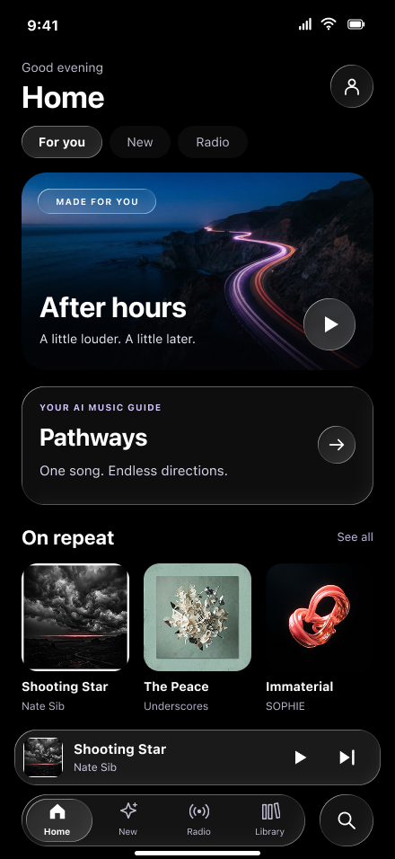
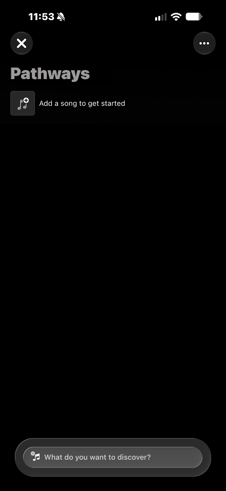
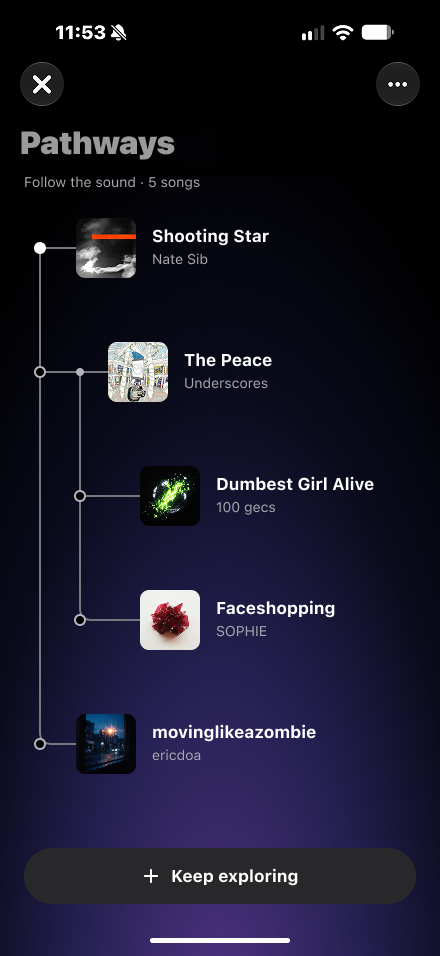

Conversational music discovery: describe a mood or a moment, then steer what the AI gives you back.
By Sawyer Nichols
Research question
Describe it. Then correct it.
How can an AI music app interpret subjective descriptions of mood and moments, and give listeners simple ways to correct and refine its suggestions without technical music vocabulary?
Curiosity statement
How could an AI-powered music app turn descriptions of moods, activities, and personal experiences into music discoveries that feel relevant but not predictable?
Why it matters
Listeners in a think-aloud study described feeling confined to their “own bubble” or “comfort zone” by recommendation algorithms. Major apps now take text prompts, so the design question has shifted from whether AI can make a playlist to how people stay in control of what it gives them.
Audience
Everyday listeners who feel stuck hearing the same recommendations. They can describe how music feels but don’t know technical terms like genres or tempo.
How my question moved
From “Can AI understand a mood?” to “How can a listener fix it when AI misunderstands a mood, and how far from their usual taste do they want to go?”
Possible final outcomes
A conversational discovery prototype where users refine results through chat.
A soundtrack builder for personal moments, with energy and progression controls.
A discovery-map interface with a familiar-to-unfamiliar slider.
Sources and notes
Five sources. Read skeptically.
Each one has what I found, what I doubt about it, and what it means for the design.
Gustav Söderström, Spotify Newsroom · December 10, 2025
Finding
Spotify already lets listeners describe what they want in their own words, refine the playlist by editing the prompt, and see why each song was picked.
Caveat
It is promotional. It says the feature understands subjective moods but never shows how well. It launched as a beta for Premium users in New Zealand, and TechCrunch coverage adds that users hit limits after roughly 20–30 prompts.
Implication
“Type a vibe, get a playlist” isn’t enough to stand out. The app has to focus on correction and on controlling how far suggestions stray from my usual taste.
Antonela Tommasel, Juan Manuel Rodriguez, and Daniela Godoy · UMAP ’22
Finding
Music recommenders can trap listeners in filter bubbles that narrow what they hear.
Caveat
The evaluation is described as “preliminary.” Researchers using Deezer data found that automated recommendations don’t systematically limit choices; the effect depends on the listener.
Implication
Not everyone feels stuck, so the “how far from my taste” control should be optional, not forced.
AI playlists work for background listening, but they miss the personal context and memories behind songs.
Caveat
One reviewer’s opinion, not a study. A lead to test, not a fact.
Implication
The app should ask about the listener’s moment instead of assuming what a mood means.
Prototype and reference images
One song. Endless directions.
Screens from my Pathways prototype, built in Figma Make. Pathways starts from one song and branches outward.

Home, with the Pathways entry point.

Pathways, empty state.

Pathways, a five-song path.All frames in Figma Make: Keep exploring, search, song detail sheets, and More to discover.
Notes and experiment log
How I got here.
Four entries, oldest first.
Info Interaction #1: Spotify’s announcement
I used AI to turn the Spotify announcement into questions about subjective moods, correction, listening history, and trust. The main thing I took away is that a company describing a feature is not the same as evidence that people find it useful.
This is where my focus started to move toward how listeners correct the AI. I mapped it in a five-stage diagram: starting inquiry, source observation, evidence check, proposed design focus, next test.
Progress Report #2: Frames in Figma Make
I made my Figma frames using Figma Make and had it make them all interactive.
What I learned
You have to be very direct about what you want when using Figma Make.
What worked
Having Figma Make implement my features. Nothing has gone wrong yet.
Status
A week ahead of my plan.
Progress Report #3: Off the roadmap
No new report this week because I didn’t really follow my roadmap. I already had the vision for the frames in my mind, so I drew them out and went to work in Figma Make.
Info Interaction #4: Checking the AI summary against the article
I asked Perplexity to generate eight questions about the Spotify announcement and to write a summary, then compared the summary with the article.
Confirmed
Prompt editing, song explanations, and the use of listening history are all in the article.
Doubted
The article never shows how well the feature understands subjective moods. It only says it can.
What changed
Typing in your own words isn’t new anymore. My concept should stand apart on correcting misunderstood moods and on a listener-controlled path from familiar sounds toward unfamiliar ones.
Next moves
What I test next.
Test Spotify’s Prompted Playlist myself with “reflective but not sad” and screenshot the results.
Sketch two correction flows for a mismatched result and ask classmates which is clearer.
Ask in interviews whether people actually feel stuck in their recommendations.
Sketch two slider versions, “familiar ↔ new” and “same genre ↔ different genre,” and test which is clearer.
Design a follow-up question the app asks, like “What’s this playlist for?”, and test it with users.
Decide how the app labels AI-started playlists while still letting listeners make them their own.